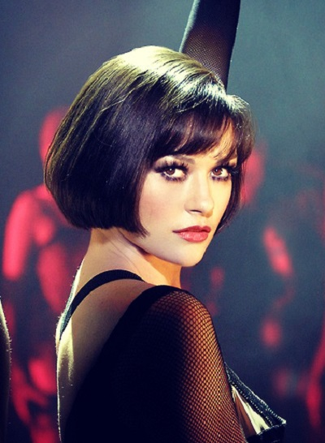

Chicago
Для шумных вечеринок прекрасно подойдет мэйк, выполненный в стиле «Чикаго». Алые губы,
красивые четкие стрелки и блестки на коже – вот что выделяет макияж в таком стиле. Он более эффектный, чем классический
французский или европейский макияж и его сложная цветовая и теневая конструкция точно не подойдет для ежедневного использования.

Макияж в таком стиле позволяет получить эффект здоровой и сияющей от природы кожи. Для того чтобы его
вам понадобится пушистая кисточка и качественный хайлайтер. Вам, в целом, даже не понадобится много практиковаться.
Потренируйтесь немного, и вы с легкостью сможете создавать эффектный макияж в стиле стробинг.
При помощи хайлайтера вы сможете выделять нужные зоны, которые будут смотреться хорошо. Сияние на коже акцентирует внимание
на этой части лица. Другие же зоны этот продукт сможет успешно скрыть. Приятно радует и то, что на создание такого макияжа
тратится достаточно мало времени. А еще вы можете краситься таким способом и днем, и вечером вне зависимости от ситуации.
Даже если вам кажется, что данный мэйк смотрится вульгарно, это совсем не так. На деле все это выглядит вполне естественно,
если сделано правильно и в соответствии с инструкцией.
{% endblock %}